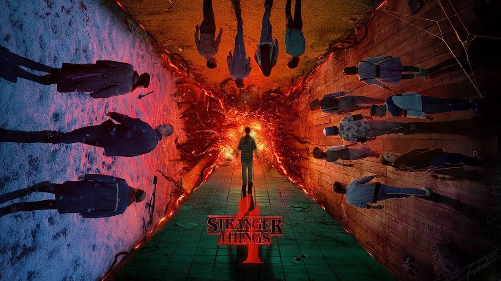

Home
About Stranger Things
Stranger Things is an American sci-fi television series created by the Duffer Brothers. It was first released as a Netflix original series on July 15, 2016.
The show takes place in the fictional town of Hawkins, Indiana in the mid 1980s. The first season, set in November 1983, follows numerous groups of characters as they separately investigate the disappearance of Will Byers. The subsequent second and third seasons expand the narrative scope, exploring the complex fallout from the events of November 1983. The fourth season further expands the show's scope, with major storylines taking place outside of Hawkins for the first time. A fifth season is in the works and is set to conclude the series. The Duffer Brothers are also known to be developing at least one spinoff series.